acclimatize: Tom is very healthy, which is why he can acclimatize to all kinds of weather

asteroid: Asteroid is a minor planet that moves around the sun.

astronaut: Neil Armstrong was the first American astronaut to set foot on the moon in 1969.
colonize: India was colonized by the British in the eighteenth century.
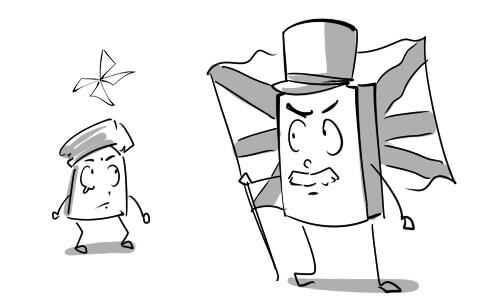
cosmos: There are plenty of planets in the cosmos besides Earth.
crater: This crater is the result of a meteorite crash in 1980.
debris: There are loads of debris floating around our planet.
exploration: The exploration of Mars has been carried out only by robots.
inevitable: A catastrophic space shuttle accident seems almost inevitable.
lunar: The lunar gravity is very weak, so the astronauts can jump very high on the moon.
meteor: Many people believe that if we made a wish when a meteor passes by, that wish would come true.

orbit: The Earth is in an elliptical orbit around the Sun.

propel: There are two massive rocket boosters strapped to the space shuttle to propel it forward.

simulator: This driving simulator is very useful to people who want to learn to drive.

sustain: There is a theory that Mars can sustain life.
terrestrial: The aliens are really surprised at how developed the terrestrial life is.

toxic: Three astronauts were killed by a leak of toxic gas yesterday.
undergo: My father is undergoing a delicate heart surgery.

uninhabitable: This desert is totally uninhabitable because it has no water at all.

universal: Robots will become universal in the future and they can help us doing household chores.
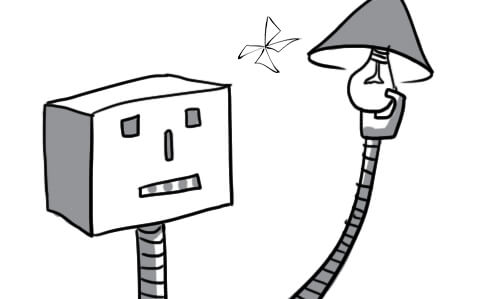
unmanned: The US used unmanned aircrafts to spy on their enemy.

weightlessness: The astronauts are used to the weightlessness of space.
computerisation: Computerisation makes the work faster and more accurate.

envisage: It is envisaged that the share price will increase soon.
labour-saving: Thanks to labour-saving devices, we can do our work very easily.
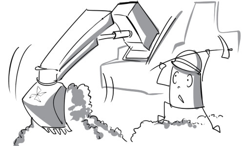
patent: The scientist was granted a patent on his new invention.

prototype: The prototype of modern bicycle had wooden wheels.
revolutionize: Smartphone has revolutionized the people's communications.

speculate: This finance software will help us speculate on the business income.
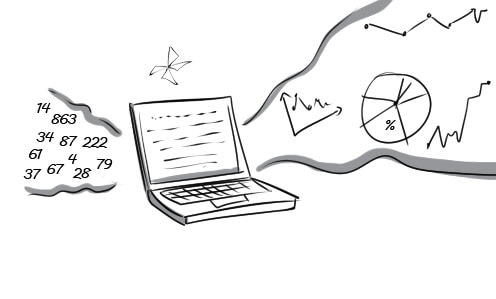
state-of-the-art: This state-of-the-art computer costs me nearly 5,000 dollars.

surpass: With many improvements, the new MacBook has surpassed all other laptops.

atmosphere: The atmosphere is a layer of gases surrounding the Earth.
commercial: Commercial flights from Earth to Mars may be available within 30-years.

Earth: A globe is a three-dimensional scale model of Earth.

extreme: We can never approach the sun because of its extreme heat.

float: Astronauts float around in space because there is no gravity in space.

galaxy: The Milky Way is the galaxy of the Earth and the solar system.

gas: Carbon dioxide is one of the most abundant greenhouse gases in the earth's atmosphere.

gravity: Gravity pulls everything towards the center of the Earth.

horizon: It's a spectacular sight as the sun sinks below the horizon.
launch: The space shuttle launch requires the speed of over 27,000 km/h in 8.5 minutes.
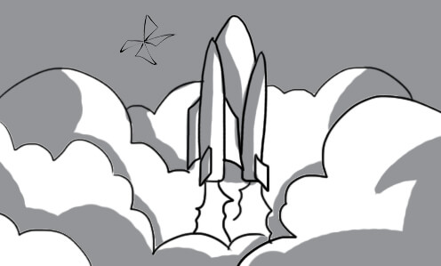
moon: The moon is the Earth's nearest neighbor.
ocean: Pacific ocean is the biggest ocean on Earth.

outer space: Telescope has contributed a lot in exploring the outer space.

planet: Saturn is the second biggest planet in the solar system.

radiation: People with high levels of exposure to ultraviolet radiation are at greater risk of skin cancer.
rocket: Russian is now successful in launching a space rocket.

rotate: It takes 24 hours for the Earth to rotate around its own axis once.

satellite: Vinasat-1 is the first Vietnamese satellite.

solar: In 2009, Germany was the world leader in using solar energy.

solar system: The solar system consists of the sun and eight planets

space: The astronaut spotted a UFO traveling in space.
space shuttle: You can travel to outer space on a space shuttle.

space station: Space station provides a wonderful condition for researching biology, physics, meteorology...

spacecraft: The spacecraft landed successfully on Mars.

surface: The surface of Mars is really rough and full of craters.

access: He accesses the internet to chat with his girlfriend.

antivirus: This antivirus software can protect your computer from many kinds of viruses.
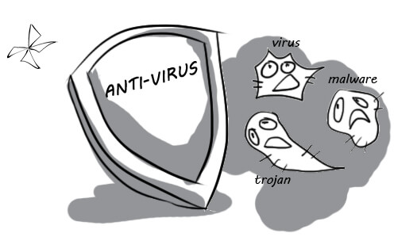
automatically: The manufacturing system of this factory is operated automatically.
compact: Compact discs are used to store digital data.

connection: Thanks to the Internet connection, people around the world can share information with each other.

data: Daniel stores his data in folders according to their types.
dated: His way to start a fire is so dated. We can do it very easily with a lighter.

device: Modern devices such as mobile phones, tablets… enable people to communicate more effectively.
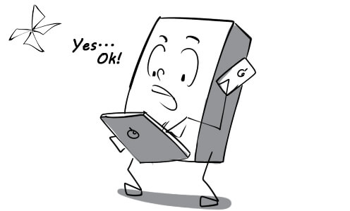
digital: I always use this digital camera to take pictures of my friends.
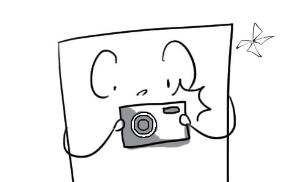
display: The lyrics are displayed at the bottom of the screen.
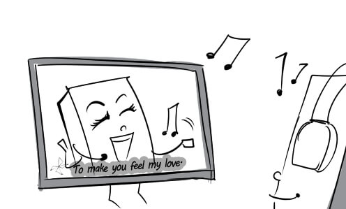
download: Nowadays, we can download music, movies and software from the Internet very easily.

function: My function in the company is data input.
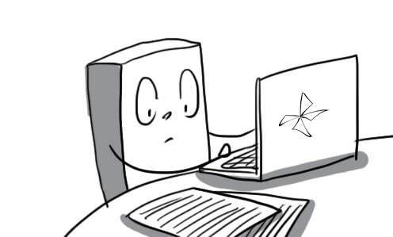
gadget: This mini speaker is a perfect gadget for smartphones.

keyboard: Apple keyboard design brings a lot of convenience for typing.

keypad: Blackberry keypad is similar to the keyboard on a computer.
laptop: David uses his personal laptop for work everyday.

memory: My laptop has two gigabytes of memory.

monitor: Peter converted his old television set into a computer monitor.

mouse: I cannot use my computer without a mouse.
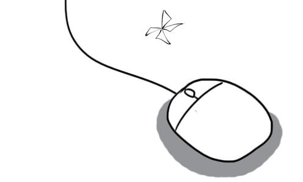
operate: The train operates punctually thanks to the advanced train control system.
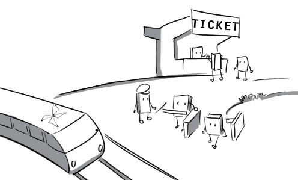
operating system: Windows is one of the most popular operating system in the world.

portable: My son plays video games on his portable game console all day.
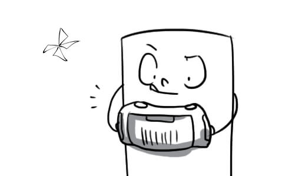
program: Microsoft Word is a very useful word processing program.
remote control: We can change the TV channels from far away with a remote control.

scroll: I am scrolling down to the bottom of the document.

silicon chip: The silicon chip is one of the greatest achievements in micro-technology.

store: Storing data wisely can reduce searching time.

technology: My office is well equipped with modern technologies.

telecommunications: Thanks to telecommunications, people can communicate with each other anywhere at any time.

up-to-date: I keep my computer up-to-date with the latest Windows updates.

user-friendly: This tablet is so user-friendly that even a 3-year-old baby can use it.
virtual: My university has built the virtual library. Students can read books without going to the campus.

vision: Cats have a very good night vision.
wireless connection: Wireless connection is available in every university in Ho Chi Minh city.